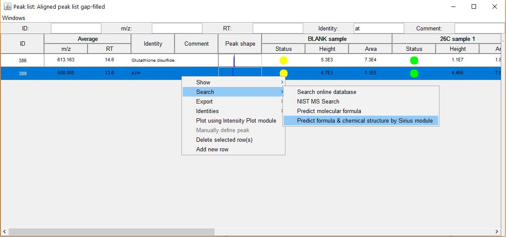
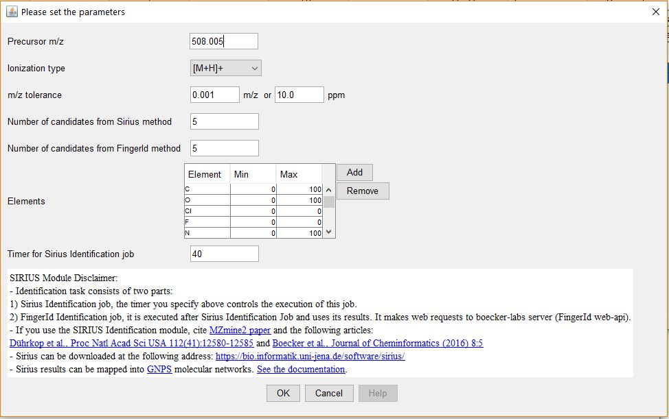
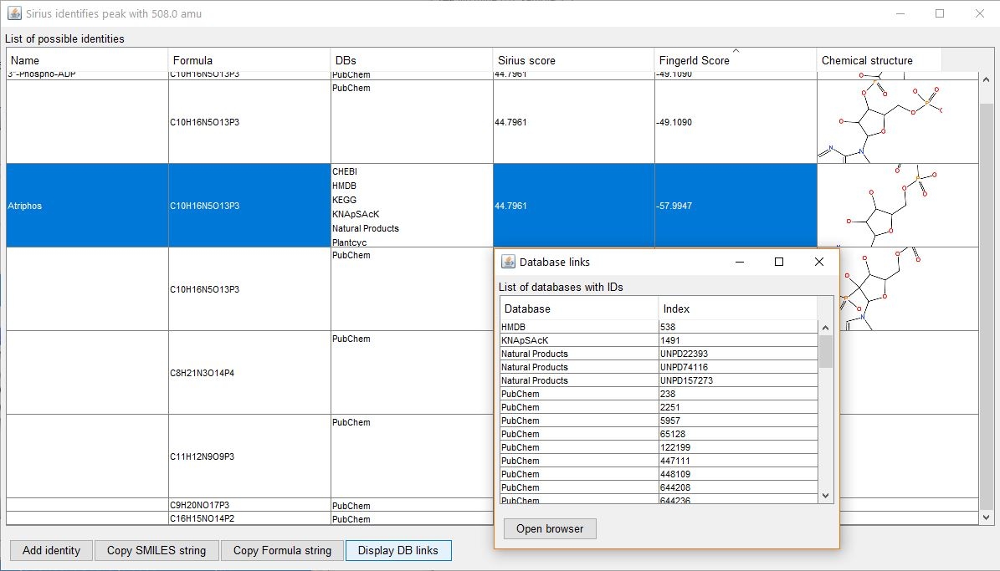

Single item identification task
Selection of a peak for identification
Dialogue window
Identification results

- Button Add identity - adds new identity.
- Button Copy SMILES string - copies to the clipboard SMILES of selected compound (if it is successfully processed by FingerId).
- Button Copy Formula string - copies to the clipboard Formula value of selected compound.
- Button Display DB links - displays another window with pairs of DB name: ID.
- If mouse hovers a preview image of the compound, large image is shown.
List of DB links returned from FingerId job
- Button Open browser - opens a new page about selected pair in a default browser.